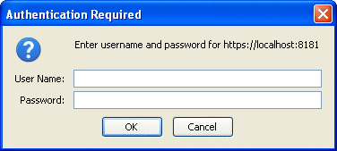
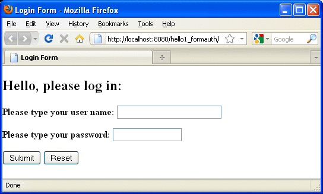

Examples: Securing Web Applications
Some basic setup is required before any of the example applications will run correctly. The examples use annotations, programmatic security, and/or declarative security to demonstrate adding security to existing web applications.
Here are some links to other locations where you will find examples of securing various types of applications:
Example: Using the isCallerInRole and getCallerPrincipal Methods
GlassFish samples: https://glassfish-samples.dev.java.net/
To Set Up Your System for Running the Security Examples
To set up your system for running the security examples, you need to configure a user database that the application can use for authenticating users. Before continuing, follow these steps.
- Add an authorized user to the GlassFish Server. For the examples in Chapter 25, Getting Started Securing Web Applications
and Chapter 26, Getting Started Securing Enterprise Applications, add a user to the file realm of the GlassFish Server,
and assign the user to the group TutorialUser:
- From the Administration Console, expand the Configuration node.
- Expand the Security node.
- Expand the Realms node.
- Select the File node.
- On the Edit Realm page, click Manage Users.
- On the File Users page, click New.
- In the User ID field, type a User ID.
- In the Group List field, type
TutorialUser
- In the New Password and Confirm New Password fields, type a password.
- Click OK.
Be sure to write down the user name and password for the user you create so that you can use it for testing the example applications. Authentication is case sensitive for both the user name and password, so write down the user name and password exactly. This topic is discussed more in Managing Users and Groups on the GlassFish Server.
- Set up Default Principal to Role Mapping on the GlassFish Server:
- From the Administration Console, expand the Configuration node.
- Select the Security node.
- Select the Default Principal to Role Mapping Enabled check box.
- Click Save.
Example: Basic Authentication with a Servlet
This example explains how to use basic authentication with a servlet. With basic authentication of a servlet, the web browser presents a standard login dialog that is not customizable. When a user submits his or her name and password, the server determines whether the user name and password are those of an authorized user and sends the requested web resource if the user is authorized to view it.
In general, the following steps are necessary for adding basic authentication to an unsecured servlet, such as the ones described in Chapter 3, Getting Started with Web Applications. In the example application included with this tutorial, many of these steps have been completed for you and are listed here simply to show what needs to be done should you wish to create a similar application. The completed version of this example application can be found in the directory tut-install/examples/security/hello2_basicauth/.
Follow the steps in To Set Up Your System for Running the Security Examples.
Create a web module as described in Chapter 3, Getting Started with Web Applications for the servlet example, hello2.
Add the appropriate security annotations to the servlet. The security annotations are described in Specifying Security for Basic Authentication Using Annotations.
Build, package, and deploy the web application by following the steps in To Build, Package, and Deploy the Servlet Basic Authentication Example Using NetBeans IDE or To Build, Package, and Deploy the Servlet Basic Authentication Example Using Ant.
Run the web application by following the steps described in To Run the Basic Authentication Servlet.
Specifying Security for Basic Authentication Using Annotations
The default authentication mechanism used by the GlassFish Server is basic authentication. With basic authentication, the GlassFish Server spawns a standard login dialog to collect user name and password data for a protected resource. Once the user is authenticated, access to the protected resource is permitted.
To specify security for a servlet, use the @ServletSecurity annotation. This annotation allows you to specify both specific constraints on HTTP methods and more general constraints that apply to all HTTP methods for which no specific constraint is specified. Within the @ServletSecurity annotation, you can specify @HttpMethodConstraint annotations that apply to specific HTTP protocol methods, or you can specify the more general @HttpConstraint annotation that applies to all HTTP protocol methods for which there is no corresponding @HttpMethodConstraint annotation.
The @HttpMethodConstraint annotation, which applies to a specific HTTP protocol method
The more general @HttpConstraint annotation, which applies to all HTTP protocol methods for which there is no corresponding @HttpMethodConstraint annotation
Both the @HttpMethodConstraint and @HttpConstraint annotations within the @ServletSecurity annotation can specify the following:
A transportGuarantee element that specifies the data protection requirements (that is, whether or not SSL/TLS is required) that must be satisfied by the connections on which requests arrive. Valid values for this element are NONE and CONFIDENTIAL.
A rolesAllowed element that specifies the names of the authorized roles.
For the hello2_basicauth application, the GreetingServlet has the following annotations:
@WebServlet(name = "GreetingServlet", urlPatterns = {"/greeting"})
@ServletSecurity(
@HttpConstraint(transportGuarantee = TransportGuarantee.CONFIDENTIAL,
rolesAllowed = {"TutorialUser"}))These annotations specify that the request URI /greeting can be accessed only by users who have been authorized to access this URL because they have been verified to be in the role TutorialUser. The data will be sent over a protected transport in order to keep the user name and password data from being read in transit.
To Build, Package, and Deploy the Servlet Basic Authentication Example Using NetBeans IDE
To build, package, and deploy the hello2_basicauth example application using NetBeans IDE, follow these steps.
- Follow the steps in To Set Up Your System for Running the Security Examples.
- In NetBeans IDE, select File→Open Project.
- In the Open Project dialog, navigate to tut-install/examples/security.
- Select the hello2_basicauth folder.
- Select the Open as Main Project check box.
- Click Open Project.
- Right-click hello2_basicauth in the Projects pane and select Deploy.
This option builds and deploys the example application to your GlassFish Server instance.
To Build, Package, and Deploy the Servlet Basic Authentication Example Using Ant
To build, package, and deploy the web/hello2_basicauth example using the Ant tool, follow these steps.
- Follow the steps in To Set Up Your System for Running the Security Examples.
- From a terminal window or command prompt, change to the tut-install/examples/security/hello2_basicauth/ directory.
- Type the following command:
ant
This command calls the default target, which builds and packages the application into an WAR file, hello2_basicauth.war, that is located in the dist directory.
- Make sure the GlassFish Server is started.
- To deploy the application, type the following command:
ant deploy
To Run the Basic Authentication Servlet
To run the web client, follow these steps.
- In a web browser, navigate to the following URL:
https://localhost:8181/hello2_basicauth/greeting
You may be prompted to accept the security certificate for the server. If so, accept the security certificate. If the browser warns that the certificate is invalid because it is self-signed, add a security exception for the application.
An Authentication Required dialog box appears. Its appearance varies depending on the browser you use. Figure 25-6 shows an example.
Figure 25-6 Sample Basic Authentication Dialog Box
 - Type a user name and password combination that corresponds to a user that
has already been created in the file realm of the GlassFish Server and
has been assigned to the group of TutorialUser, then click OK.
Basic authentication is case-sensitive for both the user name and password, so type the user name and password exactly as defined for the GlassFish Server.
The server returns the requested resource if all of the following conditions are met:
There is a user defined for the GlassFish Server with the user name you entered.
The user with the user name you entered has the password you entered.
The user name and password combination you entered is assigned to the group TutorialUser on the GlassFish Server.
The role of TutorialUser, as defined for the application, is mapped to the group TutorialUser, as defined for the GlassFish Server.
When these conditions are met, and the server has authenticated the user, the application will appear as shown in Figure 3-2 (but with a different URL).
- Type a name in the text field and click the Submit button.
Because you have already been authorized, the name you enter in this step does not have any limitations. You have unlimited access to the application now.
The application responds by saying “Hello” to you, as shown in Figure 3-3 (but with a different URL).
Next Steps
For repetitive testing of this example, you may need to close and reopen your browser. You should also run the ant undeploy and ant clean targets or the NetBeans IDE Clean and Build option to get a fresh start.
Example: Form-Based Authentication with a JavaServer Faces Application
This example explains how to use form-based authentication with a JavaServer Faces application. With form-based authentication, you can customize the login screen and error pages that are presented to the web client for authentication of the user name and password. When a user submits his or her name and password, the server determines whether the user name and password are those of an authorized user and, if authorized, sends the requested web resource.
This example, hello1_formauth, adds security to the basic JavaServer Faces application shown in Web Modules: The hello1 Example.
In general, the steps necessary for adding form-based authentication to an unsecured JavaServer Faces application are similar to those described in Example: Basic Authentication with a Servlet. The major difference is that you must use a deployment descriptor to specify the use of form-based authentication, as described in Specifying Security for the Form-Based Authentication Example. In addition, you must create a login form page and a login error page, as described in Creating the Login Form and the Error Page.
The completed version of this example application can be found in the directory tut-install/examples/security/hello1_formauth/.
Creating the Login Form and the Error Page
When using form-based login mechanisms, you must specify a page that contains the form you want to use to obtain the user name and password, as well as a page to display if login authentication fails. This section discusses the login form and the error page used in this example. Specifying Security for the Form-Based Authentication Example shows how you specify these pages in the deployment descriptor.
The login page can be an HTML page, a JavaServer Faces or JSP page, or a servlet, and it must return an HTML page containing a form that conforms to specific naming conventions (see the Java Servlet 3.0 specification for more information on these requirements). To do this, include the elements that accept user name and password information between <form></form> tags in your login page. The content of an HTML page, JavaServer Faces or JSP page, or servlet for a login page should be coded as follows:
<form method=post action="j_security_check">
<input type="text" name="j_username">
<input type="password" name= "j_password">
</form>The full code for the login page used in this example can be found at tut-install/examples/security/hello1_formauth/web/login.xhtml. An example of the running login form page is shown later, in Figure 25-7. Here is the code for this page:
<html xmlns="http://www.w3.org/1999/xhtml"
xmlns:h="http://java.sun.com/jsf/html">
<h:head>
<title>Login Form</title>
</h:head>
<h:body>
<h2>Hello, please log in:</h2>
<form name="loginForm" method="POST" action="j_security_check">
<p><strong>Please type your user name: </strong>
<input type="text" name="j_username" size="25"></p>
<p><strong>Please type your password: </strong>
<input type="password" size="15" name="j_password"></p>
<p>
<input type="submit" value="Submit"/>
<input type="reset" value="Reset"/></p>
</form>
</h:body>
</html>The login error page is displayed if the user enters a user name and password combination that is not authorized to access the protected URI. For this example, the login error page can be found at tut-install/examples/security/hello1_formauth/web/error.xhtml. For this example, the login error page explains the reason for receiving the error page and provides a link that will allow the user to try again. Here is the code for this page:
<html xmlns="http://www.w3.org/1999/xhtml"
xmlns:h="http://java.sun.com/jsf/html">
<h:head>
<title>Login Error</title>
</h:head>
<h:body>
<h2>Invalid user name or password.</h2>
<p>Please enter a user name or password that is authorized to access this
application. For this application, this means a user that has been
created in the <code>file</code> realm and has been assigned to the
<em>group</em> of <code>TutorialUser</code>.</p>
<h:link outcome="login">Return to login page</h:link>
</h:body>
</html>
Specifying Security for the Form-Based Authentication Example
This example takes a very simple servlet-based web application and adds form-based security to this application. To specify form-based instead of basic authentication for a JavaServer Faces example, you must use the deployment descriptor.
The following sample code shows the security elements added to the deployment descriptor for this example, which can be found in tut-install/examples/security/hello1_formauth/web/WEB-INF/web.xml.
<security-constraint>
<display-name>Constraint1</display-name>
<web-resource-collection>
<web-resource-name>wrcoll</web-resource-name>
<description/>
<url-pattern>/*</url-pattern>
</web-resource-collection>
<auth-constraint>
<description/>
<role-name>TutorialUser</role-name>
</auth-constraint>
</security-constraint>
<login-config>
<auth-method>FORM</auth-method>
<realm-name>file</realm-name>
<form-login-config>
<form-login-page>/login.xhtml</form-login-page>
<form-error-page>/error.xhtml</form-error-page>
</form-login-config>
</login-config>
<security-role>
<description/>
<role-name>TutorialUser</role-name>
</security-role>
To Build, Package, and Deploy the Form-Based Authentication Example Using NetBeans IDE
- Follow the steps in To Set Up Your System for Running the Security Examples.
- Open the project in NetBeans IDE by selecting File→Open Project.
- In the Open Project dialog, navigate to tut-install/examples/security.
- Select the hello1_formauth folder.
- Select the Open as Main Project check box.
- Click Open Project.
- Right-click hello1_formauth in the Projects pane and select Deploy.
Next Steps
Follow the steps in To Run the Form-Based Authentication Example.
To Build, Package, and Deploy the Form-Based Authentication Example Using Ant
- Follow the steps in To Set Up Your System for Running the Security Examples.
- From a terminal window or command prompt, change to the following directory:
tut-install/examples/security/hello2_formauth/
- Type the following command at the terminal window or command prompt:
ant
This target will spawn any necessary compilations, copy files to the tut-install/examples/security/hello2_formauth/build/ directory, create the WAR file, and copy it to the tut-install/examples/security/hello2_formauth/dist/ directory.
- To deploy hello2_formauth.war to the GlassFish Server, type the following command:
ant deploy
Next Steps
Follow the steps in To Run the Form-Based Authentication Example.
To Run the Form-Based Authentication Example
To run the web client for hello1_formauth, follow these steps.
- Open a web browser to the following URL:
https://localhost:8181/hello1_formauth/
The login form displays in the browser, as shown in Figure 25-7.
Figure 25-7 Form-Based Login Page
 - Type a user name and password combination that corresponds to a user who
has already been created in the file realm of the GlassFish Server and has
been assigned to the group of TutorialUser.
Form-based authentication is case sensitive for both the user name and password, so type the user name and password exactly as defined for the GlassFish Server.
- Click the Submit button.
If you entered My_Name as the name and My_Pwd for the password, the server returns the requested resource if all the following conditions are met.
A user with the user name of My_Name is defined for the GlassFish Server.
The user with the user name of My_Name has a password of My_Pwd defined for the GlassFish Server.
The user My_Name with the password My_Pwd is assigned to the group of TutorialUser on the GlassFish Server.
The role TutorialUser, as defined for the application, is mapped to the group TutorialUser, as defined for the GlassFish Server.
When these conditions are met and the server has authenticated the user, the application will appear as shown in Figure 3-2 but with a different URL.
- Type your name and click the Submit button.
Because you have already been authorized, the name you enter in this step does not have any limitations. You have unlimited access to the application now.
The application responds by saying “Hello” to you, as shown in Figure 3-3 but with a different URL.
Next Steps
For additional testing and to see the login error page generated, close and reopen your browser, type the application URL, and type a user name and password that are not authorized.
Note - For repetitive testing of this example, you may need to close and reopen your browser. You should also run the ant clean and ant undeploy commands to ensure a fresh build if using the Ant tool, or select Clean and Build then Deploy if using NetBeans IDE.